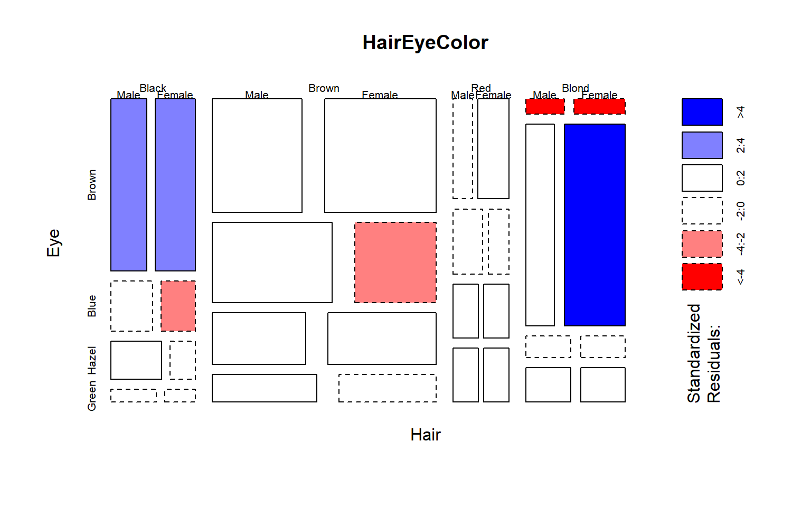

RMD Styles Tips
1 INTRODUCTION
This is an R Markdown document. Markdown is a simple formatting syntax for authoring HTML, PDF, and MS Word documents. For more details on using R Markdown see http://rmarkdown.rstudio.com.
When you click the Knit button a document will be generated that includes both content as well as the output of any embedded R code chunks within the document.
You can embed an R code chunk like this:
mosaicplot( HairEyeColor, shade = TRUE)
2 MOST IMPORTANT CHUNK SETTING
If you are working on labs, which have several questions, and you are stuck on one question then your code might not work properly. Markdown documents will not render if code has errors.
If you want credit for attempting the question, then you need to submit your broken code and note that it doesn’t work. You can do this by telling R to include a code chunk, but not evaluate it.
```{r, eval=F}
# code here
```This way you can still knit your file even if all of the code is not working.
3 KNITTING
When you Knit your RMD file, know that R Studio will start from a clean slate (a fresh R environment).
Students often run into a common problem. As you are developing solutions you might create a subset and save it as a new object:
dat.treated <- dat[ dat$study.group == "treatment" , ]But you do this in the console (the bottom window) and not in a chunk in your RMD file.
Your RMD chunks work interactively because when you are running them
in real time they use your current environment. But then you try to knit
your file R will tell you it can’t find specific object
(dat.treated in this example).
This is because you never added the code to create the new object in a chunk. It only exists in your current local environment.
Students will also paste the commands to load data for the lab into the console directly, then have similar problems with knitting.
If you get an error that an object can’t be located, check to see if you have included the R code to create the object (load or alter datasets usually) in a chunk.
3.1 Required Packages
You need to load all libraries required for analysis inside a chunk. Otherwise you will run into the same problem as above. WHen you knit you will get an error message that R cannot find specific functions. It is because they live in a package that you loaded locally, but never added to your script.
NOTE that you load packages in an RMD document while knitting, but you cannot install a package while knitting (neither should you - you only need to install a library once then just load it after that).
install.packages("tidyverse") # BAD - do not include this
library( tidyverse ) # GOOD4 SETUP
It is a recommended best practice to load all of your R packages and datasets at the beginning of your file instead of scattering these steps throughout.
There are also some basic steps you will need to set the formatting options for your markdown document.
4.1 YAML Header
Markdown documents require a YAML header. Many formatting options are set in the header. You will specify: * The type of document generated (word, html, website, book, etc.) * The formatting rules for the document
The most basic header looks like this:
---
title: "R Markdown Template"
output: html_document:
---Here are the current options for this document:
---
title: "R Markdown Template"
author: "Jesse Lecy"
date: "`r format(Sys.time(), '%d %B, %Y')`"
output:
html_document:
df_print: paged
theme: cerulean
highlight: haddock
toc: yes
toc_depth: 3
toc_float:
collapsed: false
smooth_scroll: true
code_fold: show
---4.2 knitr Global Options
The opts_chunk$set() function allows you to set options
that impact all chunks in the document.
knitr::opts_chunk$set( echo = TRUE, message=FALSE, warning=FALSE, fig.width=8 )Please turn your warning messages off before submitting labs! These are usually not important (R lets you know that your package version is not the current one, for example), but they quickly clutter the assignments.
You can also customize options directly in each chunk.
{r, message=FALSE, fig.width=10}4.3 Packages
Always load packages at the top of the file in one chunk.
library( tidyverse )It’s a bad idea to hide library() calls throughout your RMD because you cannot easily keep track of which packages are needed for a project, and loading packages multiple times can cause unwanted behaviors.
4.4 Data
Similarly, files are easier to maintain if you load all of the necessary data once at the top of the file instead of scattering load operations throughout.
# load raw project datasets herePRO TIP: If you have a large dataset that takes time to load, consider using the cache argument to your load data chunk. This saves a version of your RMD file that already has data pre-loaded and will open much faster than re-loading data every time you want to knit the file.
5 MARKDOWN FORMATTING RULES
Examples taken from Adam Pritchard’s Markdown Cheatsheet.
5.0.1 Headers
# H1
## H2
### H3
#### H4
##### H5
###### H6
Alternatively, for H1 and H2, an underline-ish style:
Alt-H1
======
Alt-H2
------
5.0.2 Emphasis
Emphasis, aka italics, with *asterisks* or _underscores_.
Strong emphasis, aka bold, with **asterisks** or __underscores__.
Combined emphasis with **asterisks and _underscores_**.
Strikethrough uses two tildes. ~~Scratch this.~~
Emphasis, aka italics, with asterisks or underscores.
Strong emphasis, aka bold, with asterisks or underscores.
Combined emphasis with asterisks and underscores.
Strikethrough uses two tildes. Scratch this.
5.0.3 Lists
Ordered lists:
1. First ordered list item
2. Another item
1. Sub-item A
2. Sub-item B
1. Actual numbers don't matter, just that it's a number
5. And another item.
Unordered list:
* Unordered list can use asterisks
- Or minuses
+ Or pluses
* sub-item
- sub-item
+ sub-item
Ordered lists:
- First ordered list item
- Another item
- Sub-item A
- Sub-item B
- Actual numbers don’t matter, just that it’s a number
- And another item.
Unordered list:
- Unordered list can use asterisks
- Or minuses
- Or pluses
- sub-item
- sub-item
- sub-item
5.0.4 Links
There are two ways to create links.
[I'm an inline-style link](https://www.google.com)
Or leave it empty and use the [link text itself]
Some text to show that the reference links can follow later.
[link text itself]: http://www.reddit.comOr leave it empty and use the link text itself
5.0.5 Images
Here’s a logo (hover to see the title text):
Inline-style:

Reference-style:
![alt text][logo]
[logo]: https://github.com/adam-p/markdown-here/raw/master/src/common/images/icon48.png "Logo Title Text 2"Inline-style: 
Reference-style:
5.0.6 Tables
Tables aren’t part of the core Markdown spec, but they are part of GFM and Markdown Here supports them. They are an easy way of adding tables to your email – a task that would otherwise require copy-pasting from another application.
Colons can be used to align columns.
| Tables | Are | Cool |
| ------------- |:-------------:| -----:|
| col 3 is | right-aligned | $1600 |
| col 2 is | centered | $12 |
| zebra stripes | are neat | $1 |
The outer pipes (|) are optional, and you don't need to make the raw Markdown line up prettily.
You can also use inline Markdown.
Markdown | Less | Pretty
--- | --- | ---
*Still* | `renders` | **nicely**
1 | 2 | 3| Tables | Are | Cool |
|---|---|---|
| col 3 is | right-aligned | $1600 |
| col 2 is | centered | $12 |
| zebra stripes | are neat | $1 |
| Markdown | Less | Pretty |
|---|---|---|
| Still | renders |
nicely |
| 1 | 2 | 3 |
5.0.7 Blockquotes
> Blockquotes are very handy in email to emulate reply text.
> This line is part of the same quote.Blockquotes are very handy in email to emulate reply text. This line is part of the same quote.
5.0.8 Horizontal Lines
Use three or more of the following:
--- # Hyphens
*** # Asterisks
___ # UnderscoresHyphens
Asterisks
Underscores
5.0.9 Mathematical Formulae
A full description of TeX math symbols is beyond the scope of this cheatsheet. Here’s a good reference, and you can try stuff out on CodeCogs. You can also play with formulae in the Markdown Here options page.
Here are some examples to try out:
$-b \pm \sqrt{b^2 - 4ac} \over 2a$
$x = a_0 + \frac{1}{a_1 + \frac{1}{a_2 + \frac{1}{a_3 + a_4}}}$
$\forall x \in X, \quad \exists y \leq \epsilon$\(-b \pm \sqrt{b^2 - 4ac} \over 2a\) \(x = a_0 + \frac{1}{a_1 + \frac{1}{a_2 + \frac{1}{a_3 + a_4}}}\) \(\forall x \in X, \quad \exists y \leq \epsilon\)
The beginning and ending dollar signs ($) are the delimiters for the TeX markup.
5.0.10 YouTube Videos
<a href="http://www.youtube.com/watch?feature=player_embedded&v=YOUTUBE_VIDEO_ID_HERE
" target="_blank"><img src="http://img.youtube.com/vi/YOUTUBE_VIDEO_ID_HERE/0.jpg"
alt="IMAGE ALT TEXT HERE" width="240" height="180" border="10" /></a>
OR iframes:
<iframe width="560" height="315" src="https://www.youtube.com/embed/YOUTUBE_VIDEO_ID_HERE" frameborder="0" allow="autoplay; encrypted-media" allowfullscreen></iframe>
6 DOCUMENT STYLES
R Markdown documents are extremely customizable using options in the header section and in chunks.
6.1 Appearance and Style
There are many options that control the appearance of HTML documents:
theme specifies the Bootstrap theme to use for the page (themes are drawn from the Bootswatch theme library). Valid themes include “default”, “cerulean”, “journal”, “flatly”, “readable”, “spacelab”, “united”, “cosmo”, “lumen”, “paper”, “sandstone”, “simplex”, and “yeti”. Pass null for no theme (in this case you can use the css parameter to add your own styles).
highlight specifies the syntax highlighting style. Supported styles include “default”, “tango”, “pygments”, “kate”, “monochrome”, “espresso”, “zenburn”, “haddock”, and “textmate”. Pass null to prevent syntax highlighting.
smart indicates whether to produce typographically correct output, converting straight quotes to curly quotes, — to em-dashes, – to en-dashes, and … to ellipses. Note that smart is enabled by default.
For example:
---
title: "Habits"
output:
html_document:
theme: united
highlight: tango
---6.2 Output Formats
For a list of document formats that R Markdown supports see the R Markdown website.
6.2.1 Documents
- Notebook Interactive R Notebooks
- HTML HTML document w/ Bootstrap CSS
- PDF PDF document (via LaTeX template)
- Word Microsoft Word document (docx)
- ODT OpenDocument Text document
- RTF Rich Text Format document
- Markdown Markdown document (various flavors)
6.2.2 Presentations
- ioslides HTML presentation with ioslides
- reveal.js HTML presentation with reveal.js
- Slidy HTML presentation with W3C Slidy
- Beamer PDF presentation with LaTeX Beamer
- shower_presentation Themeable presentations using the Shower framework
6.2.3 Journals Articles
- jss_article Journal of Statistical Software (JSS)
- acm_article Association for Computing Machinery (ACM)
- acs_article American Chemical Society (ACS) Journal
- ctex Documents based on the LaTeX package ctex
- elsevier_article Submissions to Elsevier journals
6.2.4 HTML
- html_pretty Small yet pretty HTML pages
- readthedown Format adapted from the Read the docs Sphinx theme
- html_docco Format adapted from the docco documentation generator
- html_clean Clean and simple HTML format
6.2.5 More
- flexdashboard Interactive dashboards
- bookdown HTML, PDF, ePub, and Kindle books
- Websites Multi-page websites
- Tufte Handout Handouts in the style of Edward Tufte
- Package Vignette R package vignette (HTML)
- Github Document GitHub Flavored Markdown document.
6.3 Custome Style Sheets
If you want more control over the style of your document, you can include a CSS which allows you to control fonts and spacing.
/* Include a cascading style sheet chunk to cutomize fonts and spacing */
/* {css, echo=T} */
p {
color: black;
margin: 30px 0 20px 0;
}
td {
padding: 3px 10px 3px 10px;
text-align: center;
}
table
{
margin-left: auto;
margin-right: auto;
margin-top:80px;
margin-bottom:100px;
}
h1, h2{
margin-top:100px;
margin-bottom:20px;
}
h3{
margin-top:50px;
margin-bottom:20px;
}
H5{
text-align: center;
color: gray;
font-size:0.8em;
}
img {
max-width: 90%;
display: block;
margin-right: auto;
margin-left: auto;
margin-top:30px;
margin-bottom:20px;
}
pre {
overflow-x: auto;
}
pre code {
display: block;
padding: 0.5em;
margin-bottom:10px;
}
code {
font-size: 92%;
border: 10px solid light gray;
margin-bottom: 2px;
}
code[class] {
background-color: light gray;
}6.4 Cheat Sheet
Learn more by reviewing the R Markdown Cheat Sheet.